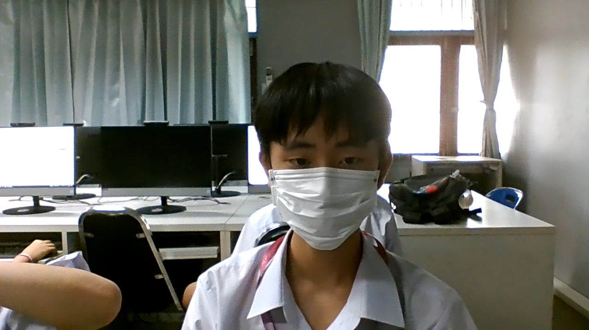

นายนัชชา ยืนยงอนันต์ : ขอบคุณที่สอนเนื้อหาดีๆให้ผมครับ
บทเพลงที่มอบให้ครู

น.ส.กุนนที วงศ์ชัยอุดมโชค : ขอบคุณที่อาจารย์ให้เกรด4ผมครับ
บทเพลงที่มอบให้ครู

นายสิงหา สุวรรณศรี : ขอบคุณอาจารย์ที่ทำให้ผมมีความสุข/ตลก/ขำในม.1ครับ
บทเพลงที่มอบให้ครู

น.ส.มาริษา วัฒนธรรม : ขอบคุณที่เป็นครูที่ปรึกษาห้องผมครับ
บทเพลงที่มอบให้ครู

ด.ช.จิรภัทร เผ่าตระกูล 207 18